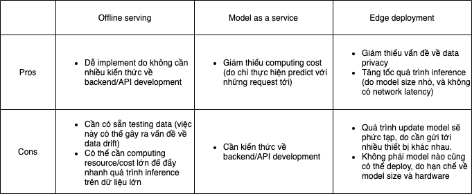
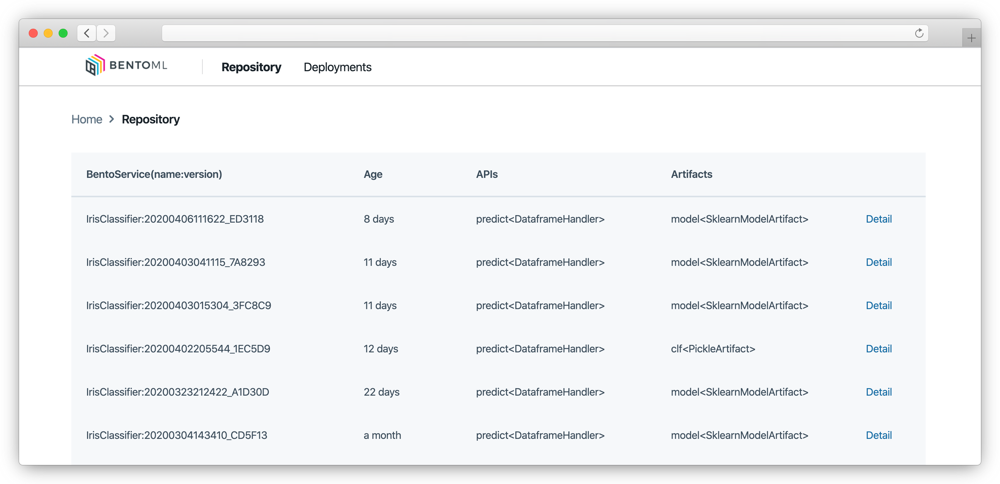

Khi mà một model đã được train xong và đáp ứng được yêu cầu cả về business lẫn technical, thì đây chính là lúc đem lên môi trường production. Giai đoạn này được gọi là model serving.
Có nhiều hình thức để serve một model, và cũng có nhiều tool/framework hỗ trợ chúng ta làm điều này.
1. Các hình thức serving
Offline serving (batch inference): model dự đoán trên cả tập dữ liệu test, và lưu kết quả vào 1 database hoặc storage.
Model as a service: đóng gói model thành một service và cung cấp API endpoint cho user. User sẽ tạo POST/GET request tới endpoint này để trigger quá trình model inference và nhận về kết quả.
Edge deployment: chuyển đổi model thành định dạng phù hợp (ví dụ ONNX) để deploy trên các thiết bị edge (ví dụ: browser, Raspberry Pi, Nvidia Jetson Nano, và Google Coral, …)
2. Khi nào thì dùng hình thức serving nào

3. BentoML
BentoML là một framework hỗ trợ đóng gói và deploy model trên nhiều nền tảng khác nhau, ví dụ:
Serverless Compute Services như AWS Lambda và Google Cloud Run
Compute Engine như Amazon EC2
AI Platform như Amazon SageMaker, VertexAI
Kubernetes Cluster như Kubeflow
Bên cạnh đó BentoML cũng cung cấp CLI, Python API và Web UI để quản lý các model trên production.

Source: https://github.com/bentoml/BentoML
4. Quickstart
Cài đặt BentoML khá đơn giản, chỉ cần chạy command
1
pip install bentoml==0.13.1
Quickstart này sẽ hướng dẫn mọi người cách serve một model SVM đơn giản (train trên dữ liệu Iris). Project structure của chúng ta sẽ như sau:
1 2 3 4
example/ ├── bento_service.py # BentoService definition ├── train.py # For training and packaging └── requirements.txt
File bento_service.py dùng để định nghĩa BentoService, bao gồm thông tin về model, package dependencies và code để predict
1 2 3 4 5 6 7 8 9 10 11 12
import pandas as pd
from bentoml import env, artifacts, api, BentoService from bentoml.adapters import DataframeInput from bentoml.frameworks.sklearn import SklearnModelArtifact
@env(infer_pip_packages=True) # automatically infer necessary pip packages @artifacts([SklearnModelArtifact('model')]) # since our model is scikit-learn based classIrisClassifier(BentoService): @api(input=DataframeInput(), batch=True) defpredict(self, df: pd.DataFrame): return self.artifacts.model.predict(df)
File train.py sẽ dùng để training model, và đóng gói model thành 1 BentoService bundle
from bento_service import IrisClassifier from sklearn import svm from sklearn import datasets
# Load training data iris = datasets.load_iris() X, y = iris.data, iris.target
# Model Training clf = svm.SVC(gamma='scale') clf.fit(X, y)
# Create a iris classifier service instance iris_classifier_service = IrisClassifier()
# Pack the newly trained model artifact iris_classifier_service.pack('model', clf)
# Save the prediction service to disk for model serving saved_path = iris_classifier_service.save(version="0.0.1")
Sau khi run file này, thì các bác sẽ thấy log ở console tương tự như sau:
1
BentoService bundle 'IrisClassifier:0.0.1' saved to: /Users/yourusername/bentoml/repository/IrisClassifier/0.0.1
Dưới đây là cấu trúc thư mục của BentoService bundle. Mọi người có thể thấy đoạn code snippet của chúng ta đã được bundle thành rất nhiều file khác để sẵn sàng cho việc đóng gói và deploy mà không cần quá nhiều kiến thức về Docker hay DevOps.
$ bentoml serve /Users/quandv6/bentoml/repository/IrisClassifier/0.0.1 --port 5005 [2022-01-03 18:25:40,967] INFO - Starting BentoML API proxy in development mode.. [2022-01-03 18:25:41,078] INFO - Micro batch enabled for API `predict` max-latency: 20000 max-batch-size 4000 [2022-01-03 18:25:41,078] INFO - Your system nofile limit is 10496, which means each instance of microbatch service is able to hold this number of connections at same time. You can increase the number of file descriptors for the server process, or launch more microbatch instances to accept more concurrent connection. ======== Running on http://0.0.0.0:5005 ======== (Press CTRL+C to quit) [2022-01-03 18:25:41,379] INFO - Starting BentoML API server in development mode.. * Serving Flask app 'IrisClassifier' (lazy loading) * Environment: production WARNING: This is a development server. Do not use it in a production deployment. Use a production WSGI server instead. * Debug mode: off * Running on http://127.0.0.1:65425/ (Press CTRL+C to quit)